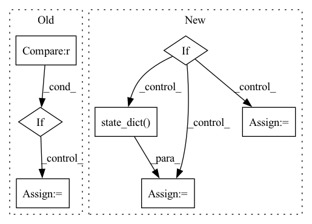

Pattern ID :37103
Before Change
"log_std_init": log_std_init})
policy = policy_class(**policy_kwargs)
elif policy_class == CnnPolicy :
policy_kwargs.update({"optimizer_class": optimizer_class,
"optimizer_kwargs": optimizer_kwargs,
})
policy = policy_class(**policy_kwargs)
else:
raise NotImplementedError
After Change
freeze=freeze_pol_encoder,
policy_continue_path=policy_continue_path)
if isinstance(encoder_or_policy, policy_class):
// Loading an existing policy
policy = encoder_or_policy
else:
// Loading a repl pretrained encoder
encoder = encoder_or_policy
// Normally the last layer of an encoder is a linear layer, but in
// some special cases like Jigsaw, we only train the convolution
// layers (with linearity handled by the decoder). In BC
// training we still need the full encoder (linear layers included),
// so here we load the weights for conv layers, and leave linear
// layers randomly initialized.
if hasattr(encoder, "network") and \
not isinstance(encoder.network.shared_network[-1], th.nn.Linear):
full_encoder = BaseEncoder(observation_space,
**encoder_kwargs)
partial_encoder_dict = encoder.state_dict()
full_encoder_dict = full_encoder.state_dict()
// pretrained_dict contains weights & bias for conv layers only.
pretrained_dict = {k: v for k, v in partial_encoder_dict.items() if
k in full_encoder_dict}
full_encoder_dict.update(pretrained_dict)
full_encoder.load_state_dict(full_encoder_dict)In pattern: SUPERPATTERN
Frequency: 3
Non-data size: 7
Instances Fragment ID: 105611785
Project Name: humancompatibleai/eirli
Commit Name: bd5e3f1d81db75a1241a9fd43d7b1daba1286152
Time: 2021-10-18
Author: cyn0531@hku.hk
File Name: src/il_representations/scripts/policy_utils.py
M Class Name: AnonimousClass
N Class Name: AnonimousClass
M Method Name: make_policy(0)
N Method Name: make_policy(0)
M Parent Class:
N Parent Class:
M File Name: src/il_representations/scripts/policy_utils.py
N File Name: src/il_representations/scripts/policy_utils.py
M Start Line: 49
M End Line: 87
N Start Line: 57
N End Line: 118
Before Change
self.sampler.nwalkers = _nwalker_save
// dump
if hdf5_group is None :
hdf5_group = self.task
if hvd.rank() == 0:
dump_to_hdf5(self.observable, self.hdf5file, hdf5_group)After Change
"cum_loss")
if hvd.rank() == 0:
if cumulative_loss < min_loss:
self.observable.models.best = dict(
self.wf.state_dict() )
self.save_checkpoint(n, cumulative_loss)
min_loss = cumulative_loss
if hvd.rank() == 0:
self.print_observable(cumulative_loss) Fragment ID: 105611802
Project Name: nlesc-jcer/qmctorch
Commit Name: 1b00af3a56a90425565e46ccfe4ff8a8bcd5d664
Time: 2021-03-11
Author: matthijs111@gmail.com
File Name: qmctorch/solver/solver_orbital_horovod.py
M Class Name: SolverOrbitalHorovod
N Class Name: SolverOrbitalHorovod
M Method Name: run(9)
N Method Name: run(8)
M Parent Class: SolverOrbital
N Parent Class: SolverOrbital
M File Name: qmctorch/solver/solver_orbital_horovod.py
N File Name: qmctorch/solver/solver_orbital_horovod.py
M Start Line: 101
M End Line: 202
N Start Line: 51
N End Line: 180
Before Change
compressed_st["state_dict"][f"{name}"]["u"] = (u[:, :i]@torch.diag(s)[:i, :i]).clone()
compressed_st["state_dict"][f"{name}"]["v"] = vt[:i].clone()
if embed is not None :
compressed_st["state_dict"]["embed"] = embed.clone()
name = delta_ckpt.replace("delta", "compressed_delta")
torch.save(compressed_st, f"{name}")After Change
def compress(delta_ckpt, ckpt, diffuser=False, compression_ratio=0.6, device="cuda"):
st = torch.load(f"{delta_ckpt}")
if not diffuser:
compressed_key = "state_dict"
compressed_st = {compressed_key: {}}
pretrained_st = torch.load(ckpt)["state_dict"]
if "embed" in st["state_dict"]:
compressed_st["state_dict"]["embed"] = st["state_dict"]["embed"]
del st["state_dict"]["embed"]
st = st["state_dict"]
else:
from diffusers import StableDiffusionPipeline
compressed_key = "unet"
compressed_st = {compressed_key: {}}
pretrained_st = StableDiffusionPipeline.from_pretrained(ckpt, torch_dtype=torch.float16).to("cuda")
pretrained_st = pretrained_st.unet.state_dict()
if "modifier_token" in st:
compressed_st["modifier_token"] = st["modifier_token"]
st = st["unet"]
Fragment ID: 105611779
Project Name: adobe-research/custom-diffusion
Commit Name: 5cd1e9c869b793d88573533a6a2adccd10aadcd0
Time: 2023-01-05
Author: nupurkumari@Nupurs-MacBook-Pro.local
File Name: src/compress.py
M Class Name: AnonimousClass
N Class Name: AnonimousClass
M Method Name: compress(5)
N Method Name: compress(4)
M Parent Class:
N Parent Class:
M File Name: src/compress.py
N File Name: src/compress.py
M Start Line: 10
M End Line: 48
N Start Line: 8
N End Line: 48